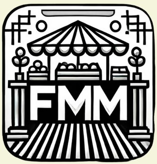

Implémentation d'un besoin client :
Développement d'un programme optimisé pour classer des dépêches selon différentes catégories.
En savoir plus sur ce projet →
Installation d'un poste de développement :
Installation d'un environnement de développement sur une machine virtuelle Linux.
En savoir plus sur ce projet →Création d'une base de données :
Conception et exploitation d'une base de données afin d'analyser le naufrage du Titanic.
En savoir plus sur ce projet →

Création du site d'une entreprise :
Conception et réalisation en équipe d'un nouveau site pour l'entreprise Atos ayant pour cible des jeunes de troisième.
En savoir plus sur ce projet →Exploitation d'une base de données :
Tri de la base de données d'Open Food Facts afin de l'analyser pour répondre à une problématique.
En savoir plus sur ce projet →

Création d'une application de gestion d'événements :
Conception et réalisation en équipe d'un nouveau site pour l'entreprise Atos ayant pour cible des jeunes de troisième.
En savoir plus sur ce projet →